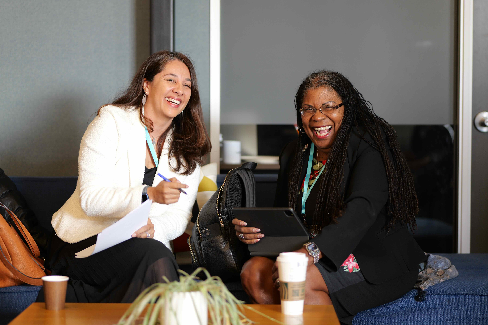

America is an experiment,
and we are inheriting its hardest chapter.
What We Believe
The next American economy is being built right now.
The question is who will have access to the American Dream for the next generation.
For two and a half centuries, this country has been arguing about who holds power, who benefits, and what we owe one another. That argument has produced extraordinary wealth and distributed it narrowly. Our generation is inheriting the hardest version of the argument yet — about Social Security and health care in an aging society, the future of work in an economy driven by AI and automation, and whether ownership and the American Dream are still available to ordinary people.
SPCC.1 is an R&D firm for economic democracy. We work with industry partners, founders, and educators to test the guiding principles of the Shared Prosperity Model in real-world settings — in the places where the next economy is actually being built.
Areas We Work In
Three intersections where the model is tested.
Industry
Workforce, Shared Ownership, and Community Infrastructure
We work in specific industries on inclusive economic development — designing the workforce pipelines, ownership pathways, and community engagement architecture that determine whether major industrial investment produces broad-based prosperity or extraction.
Entrepreneurship
Founder Transitions and Ecosystem Building
We work with entrepreneurs and founders navigating the inflection points where wealth-building actually happens — particularly the structural transition from founder-centric operations to transferable enterprise value.
Education

Economic and Civic Formation
We work with educators and institutional leaders focused on democratic renewal. We build curriculum, lead cohorts, and co-design new models for economic literacy, civic engagement, and economic democracy — because political agency without economic understanding is fragile.
The Body of Work
The thinking behind the work is grounded in published material.
A foundational white paper on the Shared Prosperity Model, concept work on the care economy, a 2025 TEDx talk among the most-viewed globally, a forthcoming book on founder ownership, and ongoing writing through Substack — developed over years of practice across industry, entrepreneurship, and education.
We are not building this alone. The guiding principles are being tested in the real world with the partners, founders, and educators who already see what is broken in the existing model and are looking for the architecture to build something different.